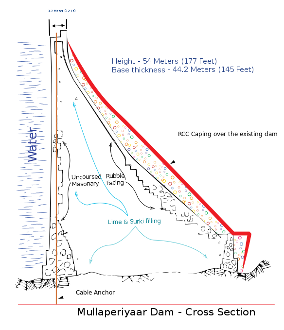

The Mullaperiyar Dam
Design
The Mullaperiyar Dam is a gravity dam made with concrete prepared from limestone and "surkhi" (burnt brick powder), and faced with rubble.Gravity dams use their weight and the force of gravity to support the reservoir and remain stable. The main dam has a maximum height of 53.6 m (176 ft) and length of 365.7 m (1,200 ft). Its crest is 3.6 m (12 ft) wide while the base has a width of 42.2 m (138 ft). It consists of a main dam, spillway on its left and an auxiliary dam (or "baby dam") to the right. Its reservoir can withhold 443,230,000 m3 (359,332 acre•ft) of water, of which 299,130,000 m3 (242,509 acre•ft) is active (live) storage.